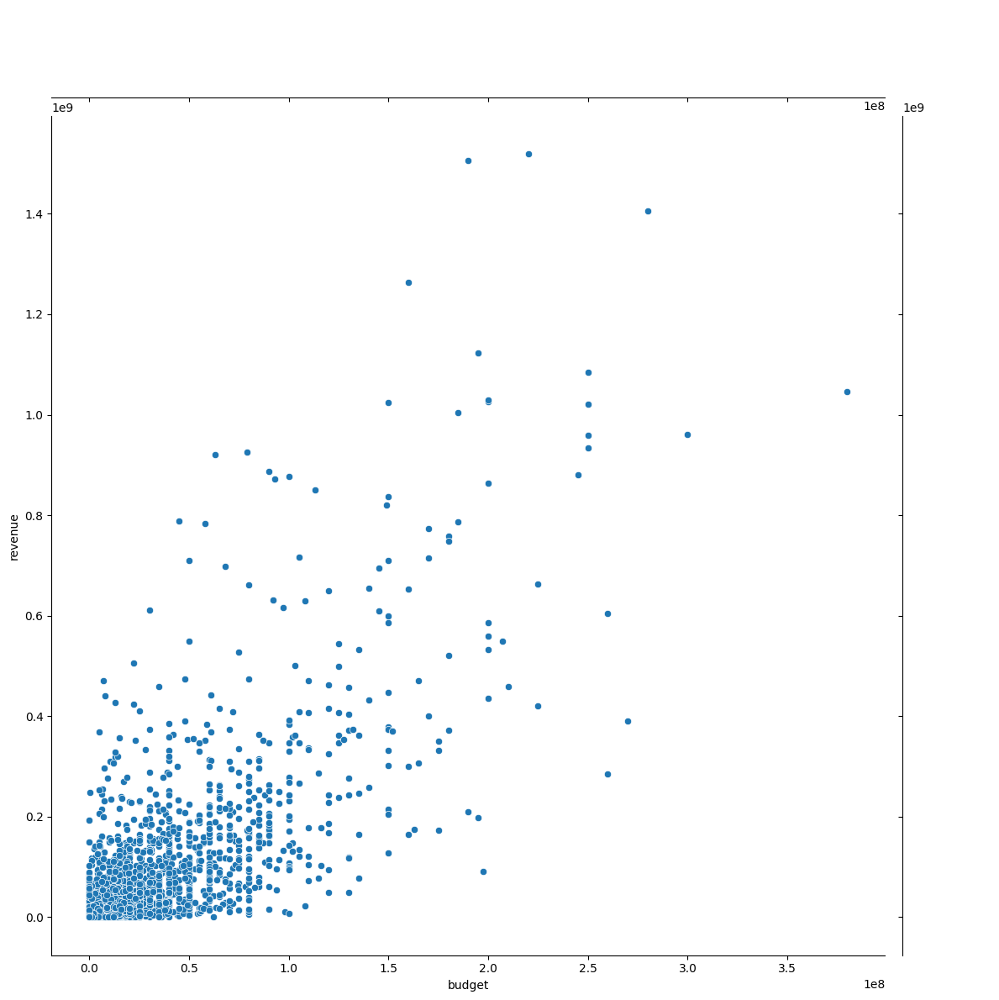
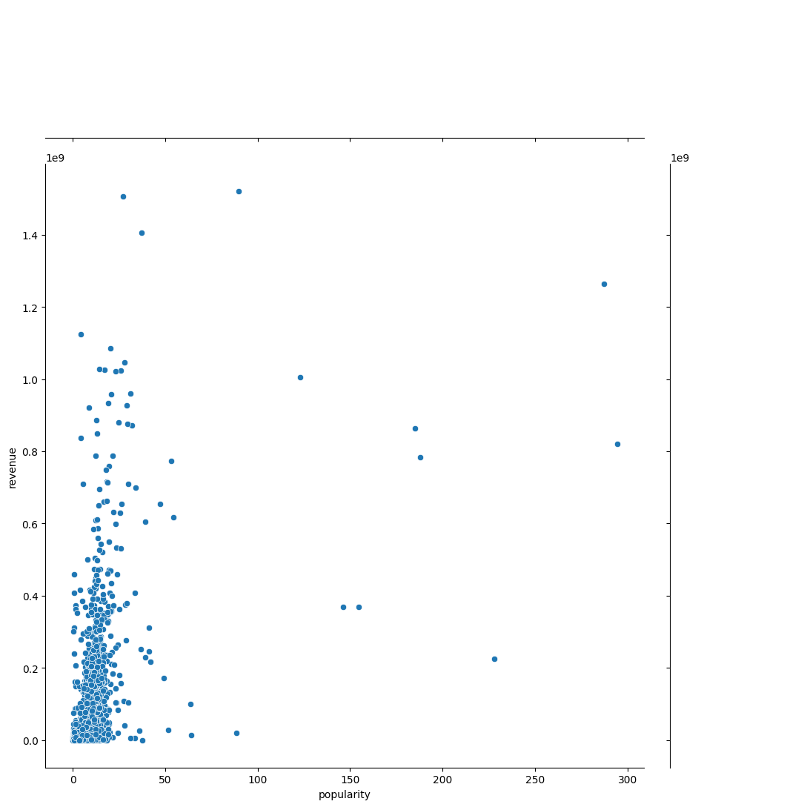
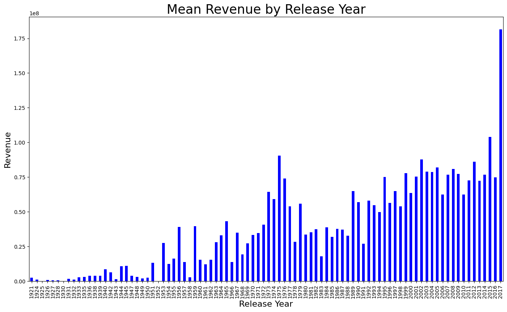

Dataset Structure & EDA Signals
EDA shows missing metadata, skewed revenue, many zero budgets, and strong budget/popularity relationships.
| Notebook Observation | Measured Value | Modeling Impact |
|---|---|---|
revenue | mean $66.68M, median $16.81M, max $1.52B | Strong skew motivates the log1p target transform before regression. |
budget | 796 zero-budget records | Manual corrections and budget ratios are needed because zeros usually mean unknown, not true zero spend. |
runtime | mean 107.86 minutes | Runtime is used directly and as ratio features against budget and rating. |
release_date | 1921 to 2017 after year correction | Release month, day, year, weekday, and quarter capture seasonality and era effects. |
original_language | English 2,575 of 3,000 rows | An English-language flag and grouped imputation help stabilize sparse language/year combinations. |



From Raw Movie Metadata to 200 Features
The pipeline combines manual corrections, JSON parsing, group statistics, one-hot fields, text counts, and ratio features.
genres, companies, countries, languages, keywords, cast, crew, and collections are converted into structured lists._etc buckets, producing a stable 200-feature production vector.df[['release_month', 'release_day', 'release_year']] = (
df['release_date'].str.split('/', expand=True)
.replace(np.nan, 0).astype(int)
)
df.loc[(df['release_year'] <= 19) & (df['release_year'] < 100), 'release_year'] += 2000
df.loc[(df['release_year'] > 19) & (df['release_year'] < 100), 'release_year'] += 1000
df['weightedRating'] = (
df['rating'] * df['totalVotes'] + 6.367 * 1000
) / (df['totalVotes'] + 1000)
df['inflationBudget'] = df['budget'] + df['budget'] * 1.8 / 100 * (2018 - df['release_year'])
df['budget'] = np.log1p(df['budget'])for col in ['production_companies', 'production_countries',
'spoken_languages', 'genres']:
df[col] = df[col].map(
lambda x: sorted(list(set([
n if n in train_dict[col] else col + '_etc'
for n in [d['name'] for d in x if isinstance(d, dict)]
]))) if isinstance(x, list) else ''
).map(lambda x: ','.join(map(str, x)))
temp = df[col].str.get_dummies(sep=',')
df = pd.concat([df, temp], axis=1, sort=False)XGBoost, LightGBM, CatBoost Weighted Blend
Three gradient boosting engines are trained across 10 folds and blended with fixed weights.
reg:squarederror, learning rate 0.1, max depth 6, subsample 0.6, column sample 0.7, histogram tree method in production training.num_leaves=30, max depth 9, low learning rate 0.005, feature and bagging fractions at 0.9, L1 regularization 0.2.Training Loop, Out-of-Fold Predictions & Submission
The notebook keeps validation predictions, test predictions, fold errors, and final CSV generation in one reproducible modeling path.
Out-of-fold validation
The notebook builds a KFold(n_splits=10, shuffle=True, random_state=2025) split, then fills val_pred only at each fold's validation indices. This makes the blended validation estimate honest because each row is predicted by models that did not train on that row.
Back to revenue scale
Since the target is trained as log1p(revenue), the final test prediction is converted with np.expm1(test_pred) before writing data/test_result.csv with the Kaggle submission columns.
val_pred = np.zeros(train.shape[0])
test_pred = np.zeros(test.shape[0])
weights = {'xgb': 0.2, 'lgb': 0.4, 'cat': 0.4}
for i, (trn, val) in enumerate(fold):
train_x = train.loc[trn, :]
train_y = y[trn]
val_x = train.loc[val, :]
val_y = y[val]
result_xgb = xgb_model(train_x, train_y, val_x, val_y, test, verbose)
result_lgb = lgb_model(train_x, train_y, val_x, val_y, test, verbose)
result_cat = catboost_model(train_x, train_y, val_x, val_y, test, verbose)
blended_val_pred = (
result_xgb['val'] * weights['xgb'] +
result_lgb['val'] * weights['lgb'] +
result_cat['val'] * weights['cat']
)sub = pd.read_csv('./data/sample_submission.csv')
df_sub = pd.DataFrame()
df_sub['id'] = sub['id']
df_sub['revenue'] = np.expm1(test_pred)
df_sub.to_csv('./data/test_result.csv', index=False)| Notebook Asset | Role | Important Detail |
|---|---|---|
train_dict | Frequent JSON category vocabulary | Keeps genres, companies, countries, languages, and keywords stable across train/test. |
safe_prepare | Numeric cleanup before boosting | Replaces infinite values, fills missing values with column means, and casts to float32. |
result_dict | Fold-level diagnostics | Stores validation predictions, test predictions, and errors so blend quality can be inspected. |
test_result.csv | Final deliverable | Contains 4,398 rows with predicted revenue on the original dollar scale. |
Batch and Single-Movie Inference
The same ensemble supports uploaded CSVs, database tables, direct JSON payloads, and IMDb ID lookup.
df_prep = prepare(df, train_dict)
df_prep = safe_prepare(df_prep)
df_prep = df_prep.reindex(columns=features, fill_value=0)
pred_xgb = xgb_model.predict(df_prep)
pred_lgb = lgb.predict(df_prep)
pred_cat = cat.predict(df_prep)
final_pred = (
pred_xgb * weights['xgb'] +
pred_lgb * weights['lgb'] +
pred_cat * weights['cat']
)
result = np.expm1(final_pred)movie_json = json.dumps(movie_dict, sort_keys=True)
input_hash = hashlib.md5(movie_json.encode()).hexdigest()
cache_key = f"single_movie_pred:{input_hash}"
df = pd.DataFrame([movie_dict])
df_prep = prepare_single(df, train_dict, global_stats, features)
df_prep = safe_prepare(df_prep)
df_prep = df_prep.reindex(columns=features, fill_value=0)
return float(np.expm1(final_pred)[0])| Endpoint | Input Mode | Response |
|---|---|---|
POST /predict/movies_file | CSV upload or database table form field | {"revenue_predictions": [...]} |
GET /predict/movies_file | CSV path or database table query parameter | Batch predictions rounded to two decimals |
POST /predict/single_movie | Pydantic movie metadata JSON | {"revenue_prediction": value} |
GET /predict/movie_from_db_by_imdbID | IMDb ID lookup across compatible DB tables | Single prediction with DB logging |
Single Movie Payload Schema
The API accepts TMDB-style movie fields plus rating and vote features from the additional dataset.
Movie identity and release context
title,imdb_id, original title, language, overview, status, taglinerelease_date, runtime, popularity, budget, homepage, poster path- Stringified JSON fields for collection, genres, companies, countries, languages, keywords, cast, and crew
Rating-enhanced prediction
ratingandtotalVotesare merged from additional feature files or supplied directly in JSON.popularity2is accepted as an extra popularity feature.- Missing values are handled with saved global and grouped statistics.
{
"title": "Hot Tub Time Machine 2",
"budget": 14000000,
"genres": "[{'id': 35, 'name': 'Comedy'}]",
"release_date": "2/20/15",
"runtime": 93.0,
"popularity": 6.575393,
"rating": 5.0,
"totalVotes": 482.0,
"imdb_id": "tt2637294"
}Route Validation, Error Handling & Logging
The API layer does more than call a model: it validates input mode, normalizes blanks, catches data-loading failures, and records every prediction attempt.
CSV upload or database table
POST /predict/movies_file accepts exactly one source: a multipart CSV file or a form field naming a PostgreSQL table. The GET version mirrors that behavior with query parameters, allowing file-path or table-based prediction from the same service.
Clear failure modes
If both inputs are supplied, or neither is supplied, the route returns a 400. CSV parsing errors and SQL table-read errors are wrapped as API exceptions instead of leaking raw stack traces to the client.
if csv_file is not None and table is not None:
raise HTTPException(
status_code=400,
detail="Provide only one of: csv_file or table."
)
if csv_file is None and table is None:
raise HTTPException(
status_code=400,
detail="You must provide either 'csv_file' or 'table'!"
)
if csv_file:
df = pd.read_csv(csv_file.file)
elif table:
df = pd.read_sql_table(table, engine)for i, row in df.iterrows():
row_dict = replace_nan_with_none(row.to_dict())
log_prediction(
engine=engine,
endpoint="/predict/movies_file",
input_data=row_dict,
prediction=preds[i],
imdb_id=row.get("imdb_id"),
status="success"
)| FastAPI Layer | Implementation Detail | Why It Matters |
|---|---|---|
response_model | BatchPredictionResponse and SinglePredictionResponse | Guarantees predictable JSON response shape for clients and Swagger UI. |
UploadFile | Reads uploaded CSV from csv_file.file | Supports realistic batch prediction without requiring a local file path on the server. |
Query | Uses query parameters for CSV path, table name, and IMDb ID | Allows browser-testable GET routes and database lookup workflows. |
HTTPException | Raises 400, 404, or 422-style errors depending on the failure | Turns pipeline failures into understandable API responses. |
Batch Pipeline vs. Single-Row Pipeline
Batch inference can compute statistics from a DataFrame, but single-movie inference must use saved global statistics to avoid schema drift.
release_date into month, day, year, day-of-week, and quarter, then repair two-digit years.global_stats.pkl for year/language fallback values.features.pkl, adding absent one-hot columns as zero.df['rating'] = df.apply(
lambda row: row['rating'] if pd.notnull(row['rating'])
else get_group_stat(
global_stats['rating_mean_by_year_lang'],
row['release_year'],
row['original_language'],
global_stats['rating_mean']
),
axis=1
)for col in features:
if col not in df.columns:
df[col] = 0.0
df = df[features]
df = safe_prepare(df)
df = df.reindex(columns=features, fill_value=0)Docker Compose Runtime
The project includes a slim Python API image and a PostgreSQL 16 service with a persistent volume.
FROM python:3.11-slim WORKDIR /movie_app COPY requirements.txt . RUN pip install --no-cache-dir -r requirements.txt COPY . . EXPOSE 8000 CMD ["uvicorn", "app.main:app", "--host", "0.0.0.0", "--port", "8000"]
services:
db:
image: postgres:16
environment:
POSTGRES_USER: postgres
POSTGRES_DB: tmdb
ports:
- "5432:5432"
app:
build: .
depends_on:
- db
ports:
- "8000:8000"| Runtime Component | Role | Repository Evidence |
|---|---|---|
FastAPI | Serves prediction endpoints and Swagger docs at port 8000 | app/main.py, Dockerfile |
PostgreSQL | Stores movie tables and prediction logs | docker-compose.yml, SQLAlchemy engine |
Redis | Optional inference cache for repeated batch/single requests | app/inference.py |
joblib/pickle | Loads boosters, blend weights, feature list, dictionaries, and global stats | models/ artifacts |
Database Training and Submission Artifacts
Scripts connect raw CSV work, PostgreSQL tables, retraining, and final Kaggle-style output files.
| Script / Artifact | Purpose | Output |
|---|---|---|
scripts/create_ultimate_data.py | Builds combined train/test CSVs from base and additional feature sources | ultimate_train.csv, ultimate_test.csv |
scripts/import_train_to_db.py | Moves prepared training tables into PostgreSQL | Database-backed training source |
scripts/train_from_db.py | Retrains the same 10-fold blended ensemble from DB tables | Final XGB, LGB, Cat, features, and blend config |
scripts/test_client_single_movie.py | Sends a representative single movie payload to the API | Status code and JSON prediction response |
data/test_result.csv | Notebook-created final output in submission shape | 4,398 revenue predictions |
Tables, Imports & Prediction Audit Trail
The database layer supports training data import, table-based prediction, IMDb lookup, and persistent logging of prediction attempts.
engine = create_engine(
f'postgresql+psycopg2://{DB_USER}:{DB_PASSWORD}'
f'@{DB_HOST}:{DB_PORT}/{DB_NAME}'
)
train = pd.read_csv('data/train.csv')
add_train = pd.read_csv('data/AdditionalTrainData.csv')
add_feat = pd.read_csv('data/TrainAdditionalFeatures.csv')
train.to_sql('train_data', engine, if_exists='replace', index=False)
add_train.to_sql('additional_train_data', engine, if_exists='replace', index=False)
add_feat.to_sql('train_additional_features', engine, if_exists='replace', index=False)INSERT INTO predictions (
timestamp,
endpoint,
imdb_id,
input_data,
prediction,
status,
error_message
)
VALUES (
:timestamp,
:endpoint,
:imdb_id,
:input_data,
:prediction,
:status,
:error_message
)| Database Table / Flow | Created By | Used For |
|---|---|---|
train_data | import_train_to_db.py | Base 3,000-row TMDB training table for DB-backed retraining. |
additional_train_data | import_train_to_db.py | Extra rows merged into training to strengthen the regression signal. |
train_additional_features | import_train_to_db.py | IMDb-linked rating and vote features joined by imdb_id. |
ultimate_train / ultimate_test | create_ultimate_data.py | Pre-merged CSVs also pushed into PostgreSQL for service workflows. |
predictions | log_prediction() | Audit trail for endpoint, input JSON, prediction value, status, and error message. |
Database takeaway: PostgreSQL is not only storage. It becomes a second operating mode for the model: train from database tables, predict from a table name, look up a movie by IMDb ID, and preserve a prediction history for debugging and monitoring.
Container Startup, Ports & Service Boundaries
Docker Compose separates the API and database while exposing the same local ports used by development scripts.
python:3.11-slim, installs requirements.txt, copies the project, and starts Uvicorn.postgres:16 with the tmdb database and a persistent pgdata volume.8000:8000; PostgreSQL is published on 5432:5432 for scripts and inspection.http://localhost:8000/docs.docker compose up --build # API http://localhost:8000 # Swagger UI http://localhost:8000/docs # Stop containers docker compose down
fastapi==0.115.12 uvicorn==0.34.3 pydantic==2.11.5 pandas==2.2.3 numpy==2.2.6 scikit-learn==1.6.1 xgboost==3.0.2 lightgbm==4.6.0 catboost==1.2.8 redis==6.2.0 sqlalchemy==2.0.41
Project Synthesis & Roadmap
The project moves from notebook experimentation to a reusable prediction service without losing feature-engineering parity.
Modeling result: the notebook builds a high-feature regression workflow around log-transformed revenue, manual anomaly correction, external ratings/votes, JSON category processing, and a 10-fold blend of XGBoost, LightGBM, and CatBoost.
Production result: the app packages the model as a FastAPI service with batch, single-movie, and IMDb lookup prediction paths, saved feature schemas, optional Redis caching, PostgreSQL prediction logging, and Docker Compose deployment.
Future directions:
- Add recorded CV and leaderboard metrics into the saved blend config for stronger model governance.
- Move database credentials into environment variables for safer deployment.
- Add automated tests for
prepare_singleparity against notebook feature output. - Track feature importance summaries for XGB, LGB, and CatBoost in the project page and API docs.